<!DOCTYPE lake>
<h2 data-lake-id="Qikg2" id="Qikg2"><span data-lake-id="uf2bc18a8" id="uf2bc18a8">学习目标</span></h2><ol list="u7c125e2c"><li data-lake-id="ucf485b24" fid="ueff76f26" id="ucf485b24"><span data-lake-id="ub9e112d3" id="ub9e112d3">掌握开发包安装流程</span></li><li data-lake-id="u48c55119" fid="ueff76f26" id="u48c55119"><span data-lake-id="u30537168" id="u30537168">能够举一反三的下载其他ARM平台安装包</span></li></ol><h2 data-lake-id="gXBfT" id="gXBfT"><span data-lake-id="u2dc4c18f" id="u2dc4c18f">学习内容</span></h2><h3 data-lake-id="A9eq3" id="A9eq3"><span data-lake-id="u1abb3165" id="u1abb3165">安装方式</span></h3><ol list="u74a25b39"><li data-lake-id="u6c7eea70" fid="ube7e86af" id="u6c7eea70"><span data-lake-id="u9a5c869b" id="u9a5c869b">在线安装</span></li><li data-lake-id="u0ff2dbc1" fid="ube7e86af" id="u0ff2dbc1"><span data-lake-id="udbfa3eec" id="udbfa3eec">离线安装</span></li></ol><p data-lake-id="u2df9d83c" id="u2df9d83c"><span data-lake-id="u05e03ef4" id="u05e03ef4">推荐在线安装，只需要下载1M左右大小的内容。</span></p><p data-lake-id="ud3fb76c9" id="ud3fb76c9"><span data-lake-id="u7be1c0bc" id="u7be1c0bc">如果在线安装无法完成，可能是由于开启了网络代理，请手动打开代理软件关闭全局代理。如果网络条件较差，建议使用离线安装。</span></p><h3 data-lake-id="ftFD3" id="ftFD3"><span data-lake-id="ue2847ab7" id="ue2847ab7">开发包在线安装（推荐）</span></h3><p data-lake-id="ud870e695" id="ud870e695"><span class="lake-fontsize-12" data-lake-id="u05bd9618" id="u05bd9618" style="color: rgb(51, 51, 51)">打开 keil5,点击 Pack Installer</span></p><p data-lake-id="u941cc6a6" id="u941cc6a6">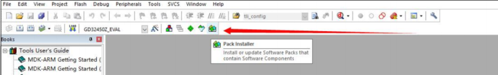</p><p data-lake-id="uf03f0574" id="uf03f0574"><span class="lake-fontsize-12" data-lake-id="u17780bbc" id="u17780bbc" style="color: rgb(51, 51, 51)">点击 Pack Installer 按钮之后弹出界面，点击 ok</span></p><p data-lake-id="u0427bd68" id="u0427bd68">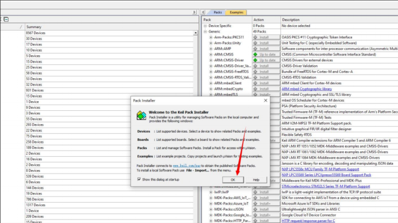</p><p data-lake-id="u1498bdd2" id="u1498bdd2"><span class="lake-fontsize-12" data-lake-id="u6c0cf8b2" id="u6c0cf8b2" style="color: rgb(51, 51, 51)">在 Devices 选项卡里找到 GigaDevice 选项，然后选中点开</span></p><p data-lake-id="u5f68579d" id="u5f68579d">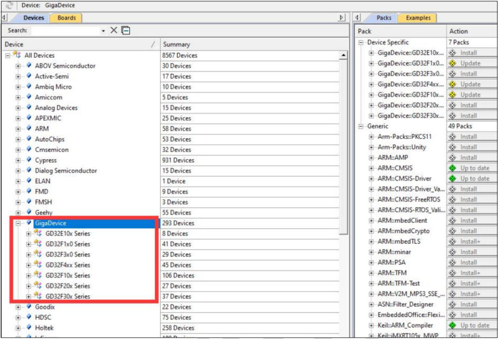</p><p data-lake-id="ua44256f3" id="ua44256f3"><span class="lake-fontsize-12" data-lake-id="u2dd7a362" id="u2dd7a362" style="color: rgb(51, 51, 51)">选择我们使用的芯片型号系列，因为我们使用的是 GD32F450ZG，所以我们选择</span><code data-lake-id="u1f0eb9c9" id="u1f0eb9c9"><span class="lake-fontsize-12" data-lake-id="ufd0837c7" id="ufd0837c7" style="color: rgb(51, 51, 51)">GD32F4xx Series</span></code></p><p data-lake-id="u7d5c0eda" id="u7d5c0eda">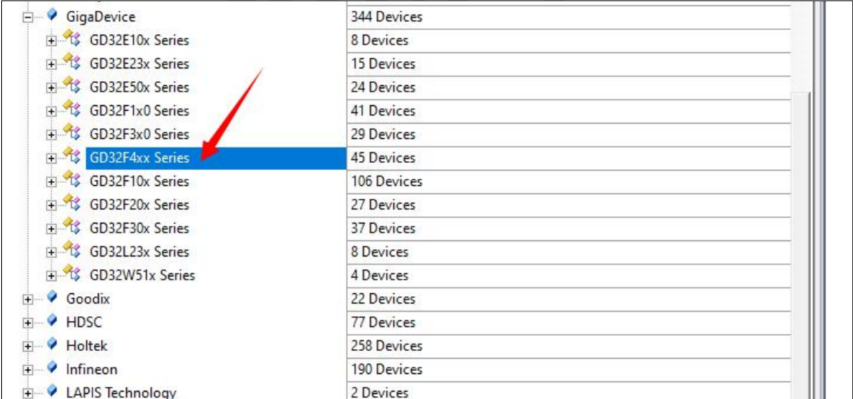</p><p data-lake-id="ub5d1d255" id="ub5d1d255"><span class="lake-fontsize-12" data-lake-id="u145fae9c" id="u145fae9c" style="color: rgb(51, 51, 51)">选中之后，在右边一栏中 Device Specific 下拉菜单下可见 GigaDevice::GD32F4xx_DFP ,点击右侧的 Install 按钮，即可在线下载 GD32F4xx 系列产品的 Pack 包</span></p><p data-lake-id="u2eac6603" id="u2eac6603">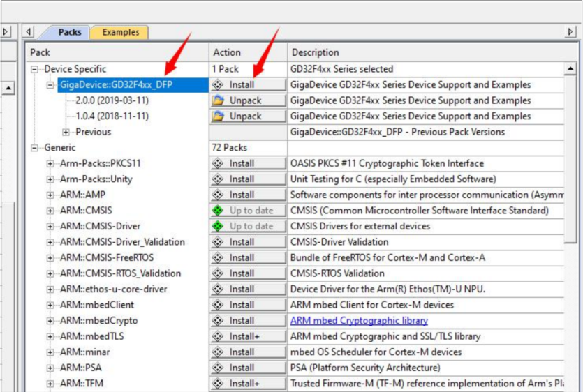</p><p data-lake-id="u2d271303" id="u2d271303"><span class="lake-fontsize-12" data-lake-id="u1f541db3" id="u1f541db3" style="color: rgb(51, 51, 51)">在窗口最下面可见下载安装进度条。此时 Pack 会在线下载到 Keil5 安装目录下(</span></p><p data-lake-id="ub7b673c2" id="ub7b673c2"><span class="lake-fontsize-12" data-lake-id="u92e11d94" id="u92e11d94" style="color: rgb(51, 51, 51)">Keil_v5\ARM\Packs\GigaDevice)，并完成安装。</span></p><p data-lake-id="u36c23267" id="u36c23267"><span class="lake-fontsize-12" data-lake-id="ud2759241" id="ud2759241" style="color: rgb(51, 51, 51)">我们可以查看其目录</span></p><p data-lake-id="uc5a09905" id="uc5a09905">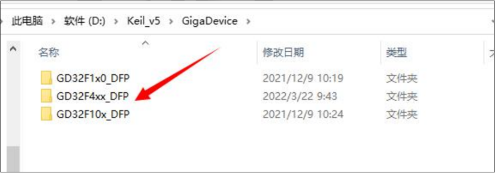</p><p data-lake-id="ue509475c" id="ue509475c"><br/></p><h3 data-lake-id="NvLfv" id="NvLfv"><span data-lake-id="ub86d1384" id="ub86d1384">开发包离线安装</span></h3><p data-lake-id="ufba36f75" id="ufba36f75"><span class="lake-fontsize-12" data-lake-id="ud439644a" id="ud439644a" style="color: rgb(51, 51, 51)">直接从官网下载器件包</span></p><p data-lake-id="u4380d087" id="u4380d087"><span class="lake-fontsize-12" data-lake-id="u4ea661d6" id="u4ea661d6" style="color: rgb(51, 51, 51)">下载地址:</span><a data-lake-id="u975957f5" href="http://www.gd32mcu.com/cn/download/7?kw=GD32F4" id="u975957f5" rel="noopener noreferrer" target="_blank"><span class="lake-fontsize-12" data-lake-id="ud78da548" id="ud78da548">http://www.gd32mcu.com/cn/download/7?kw=GD32F4</span></a></p><p data-lake-id="u4c746233" id="u4c746233"><span class="lake-fontsize-12" data-lake-id="u5ba4b63f" id="u5ba4b63f" style="color: rgb(51, 51, 51)">选择 GD32F4XX AddOn</span></p><p data-lake-id="u5367f93e" id="u5367f93e">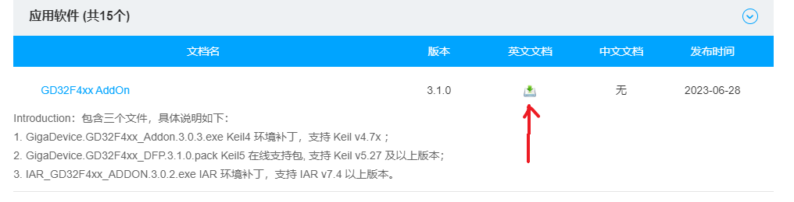</p><p data-lake-id="ud380e44e" id="ud380e44e"><span class="lake-fontsize-12" data-lake-id="uf894421d" id="uf894421d">或直接点这里下载：</span></p><a class="yuque-card-link" href="https://www.yuque.com/attachments/yuque/0/2023/7z/27903758/1691843374085-20d7183c-327a-416e-8d06-cabfc9f26f48.7z">localdoc：GD32F4xx_AddOn_V3.1.0.7z</a><p data-lake-id="uf59a8ef1" id="uf59a8ef1"><span class="lake-fontsize-12" data-lake-id="u429b40f8" id="u429b40f8" style="color: rgb(51, 51, 51)">下载完成之后进行解压，在 </span><code data-lake-id="ubdbfb2a6" id="ubdbfb2a6"><span class="lake-fontsize-12" data-lake-id="uf7693847" id="uf7693847" style="color: rgb(51, 51, 51)">GD32F4xx_AddOn_Vx.x.x</span></code><span class="lake-fontsize-12" data-lake-id="u797832c6" id="u797832c6" style="color: rgb(51, 51, 51)">目录下，有一个器件包</span><code data-lake-id="ub2956f78" id="ub2956f78"><span class="lake-fontsize-12" data-lake-id="u6ef5b26b" id="u6ef5b26b" style="color: rgb(51, 51, 51)">xxx.pack</span></code><span class="lake-fontsize-12" data-lake-id="ue6a9ada1" id="ue6a9ada1" style="color: rgb(51, 51, 51)">，双击这个进行安装</span></p><p data-lake-id="u7d53d56f" id="u7d53d56f">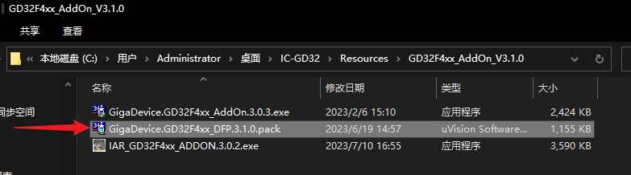</p><p data-lake-id="ue2746360" id="ue2746360"><span data-lake-id="uc9fa00a9" id="uc9fa00a9">路径为默认填充，直接点下一步即可：</span></p><p data-lake-id="u828fe7c6" id="u828fe7c6">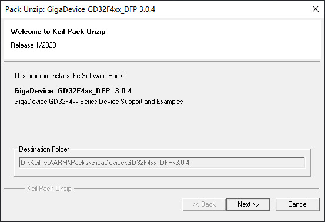</p><p data-lake-id="u035f43b0" id="u035f43b0"><span class="lake-fontsize-12" data-lake-id="u1a634953" id="u1a634953" style="color: rgb(51, 51, 51)">安装完成之后如图</span></p><p data-lake-id="u3228fdb7" id="u3228fdb7">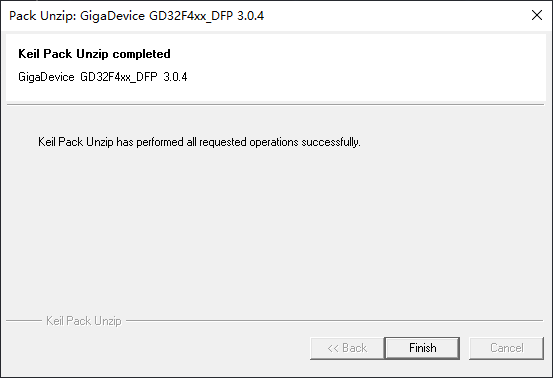</p><h3 data-lake-id="RyKWF" id="RyKWF"><br/></h3><h3 data-lake-id="UEeMZ" id="UEeMZ"><span data-lake-id="uf0f14eb0" id="uf0f14eb0">校验</span></h3><p data-lake-id="ud27b556e" id="ud27b556e"><span data-lake-id="ua462f4c1" id="ua462f4c1">打开魔法棒中的Device，出现</span><code data-lake-id="u4ddb7268" id="u4ddb7268"><span data-lake-id="u700e7f8a" id="u700e7f8a">GigaDevice</span></code><span data-lake-id="u687d0c46" id="u687d0c46">说明安装成功。</span></p><p data-lake-id="u2a0abf61" id="u2a0abf61">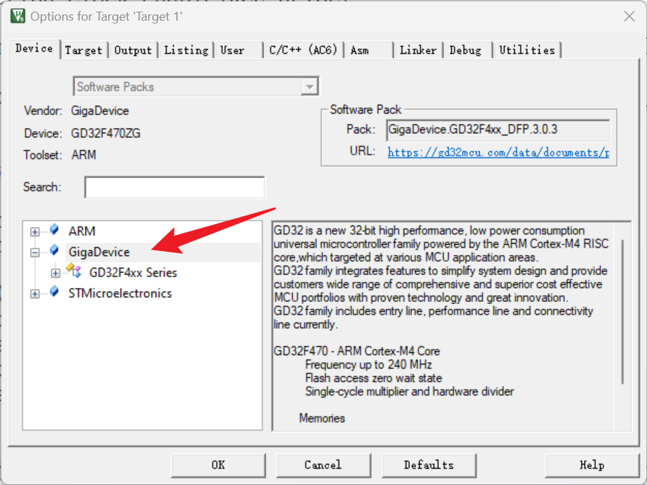</p><h1 data-lake-id="sWGSM" id="sWGSM"><span data-lake-id="u53bbf2e3" id="u53bbf2e3">​</span><br/></h1><p data-lake-id="u99dddbda" id="u99dddbda"><br/></p><p data-lake-id="u626471b7" id="u626471b7"><span data-lake-id="ud79a53f2" id="ud79a53f2">​</span><br/></p>